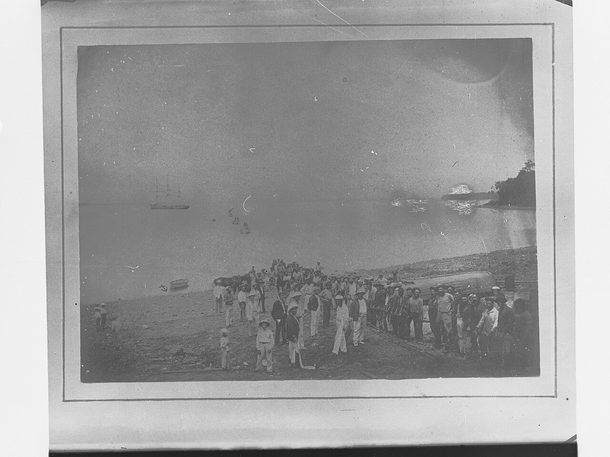
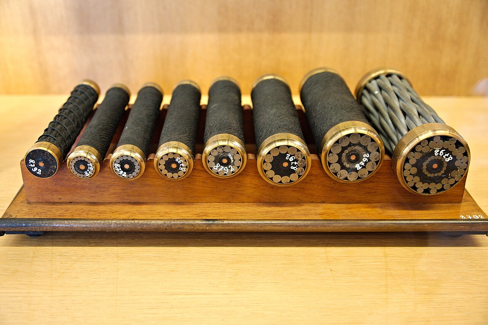

你正在讀的這篇文章，是怎麼從海底抵達的？
網際網路不在「雲端」，而在幾千公里外、花園水管粗細的電纜裡。它如何運作，又為什麼有時會突然消失？
2023 年 2 月，台灣外島馬祖的一萬四千名居民發現網路幾乎斷絕：民宿業者無法提供房客網路、傳一則簡訊要等上幾小時、視訊完全看不了。原因不是駭客攻擊，也不是基地台故障，而是連接馬祖與台灣本島的兩條海底電纜在六天之內先後被船隻切斷。我們習慣把網路想像成漂浮在「雲端」的東西，但這次事件提醒了一個物理事實：跨海的資料，絕大多數是走海底電纜的。
一、網際網路其實鋪在海底
把兩個大陸用電纜連起來的想法，比網際網路早了一百多年。1858 年，美國商人 Cyrus Field 與大西洋電報公司鋪設了第一條跨大西洋電報電纜；英國維多利亞女王與美國總統布坎南藉它互致賀電，但這條電纜只穩定運作了幾週便失效。直到 1866 年，可靠運作的跨大西洋電纜才真正建立。當時倫敦的報紙寫道：「時間與空間彷彿真的被消滅了。」
一百六十年後，這個想法長成了全球網路的骨架。根據長期追蹤此產業的研究機構 TeleGeography，截至 2026 年，全球有超過 600 條使用中或規劃中的海底電纜，使用中的總長度超過 150 萬公里。[2]這些電纜的設計壽命約 25 年，但多數並非「壞掉」而退役，而是容量比不上更新的電纜，在經濟上被淘汰。
電纜退役後的命運也值得一提：有些留在海床上，有些被企業買下打撈、回收原料，甚至有些被重新鋪設到需求較小的路線繼續使用。而在鋪設之前，業者會先做完整的海洋調查，避開斷層帶、漁場與錨地——路線選擇本身，就是第一道防線。

二、訊號怎麼跨過一萬公里的海洋？
現代海底電纜的核心是細如頭髮的玻璃光纖，雷射在一端以極高頻率閃爍，光訊號在玻璃裡一路前進。根據英國電纜業組織 KIS-ORCA 的技術說明，整條深海段電纜大約只有花園水管粗——直徑約 17 到 21 毫米[3]——裡面除了光纖，還有高張力鋼絲與一層銅導體。靠近岸邊、容易被人類活動干擾的海域，電纜會包上更多層鎧裝並埋進海床；深海段則直接放置在海底。
光在玻璃裡前進會逐漸衰減，因此長途電纜每隔約 50 到 80 公里設置一個「中繼器」：一段摻鉺光纖，由雷射激發後放大通過的光訊號。這些中繼器需要電力，於是電纜中的銅導體從兩端的登陸站送入高壓電，沿途供電。一條跨洋電纜因此既是光學系統，也是一條超長的輸電線。

三、「99% 的國際資料走海底電纜」可靠嗎？
這句話被媒體引用了無數次，包括國際電信聯盟（ITU）秘書長在 2024 年的公開聲明[6]。但 TeleGeography 做了一件少見的事：回頭查證這個數字的來源。他們發現唯一有出處的版本指向美國聯邦通訊委員會（FCC）的舊報告——衛星只佔美國國際通訊容量的 0.37%[5]。問題是，那份數據是 2013 年統計、2015 年發布的，而且 FCC 後來改變了申報要求，沒有更新數據。
TeleGeography 的結論很誠實：這個說法方向正確，他們也確認其成立，但在缺乏洲際衛星流量數據的情況下，沒有人能精確算出百分比。英國漁業與電纜業者的合作組織 KIS-ORCA 使用的說法是「約 95%」[3]。這是分辨「廣為流傳」與「經過查證」的好例子：一個數字被重複的次數，從來不是它準確度的證據。可以確定的是，衛星與海底電纜的角色並不對等——衛星在容量與延遲上無法取代電纜的主要路線。
Submarine cables carry over 99 per cent of international data exchanges.——國際電信聯盟秘書長 Doreen Bogdan-Martin，2024 年 11 月
四、既脆弱又強韌：故障是日常，斷網不是
海底電纜的故障其實很頻繁。根據 ITU 引述國際電纜保護委員會（ICPC）的資料，全球每年約發生 150 到 200 次電纜故障，平均每週要進行約三次維修[6]；KIS-ORCA 的維修資料顯示，約七成的故障由漁撈與船錨造成[4]——而且水深是關鍵分界：淺於 200 公尺的海域幾乎都是人為活動所致，深於 1,000 公尺處則以海底地震、滑坡等自然因素為主。然而我們並不常感覺到「海底電纜斷了」，因為網路在設計上以備援為核心原則：一條路徑失效，流量會改走其他電纜或陸上路由。ICPC 也指出，媒體有時誇大單一通道的重要性——例如荷莫茲海峽實際承載的頻寬不到全球國際頻寬的 1%[7]。
但「整體的韌性」掩蓋不了「端點的脆弱」。馬祖就是反例：全島只依賴兩條通往台灣本島的電纜，兩條一斷，備援只剩頻寬有限的微波傳輸。據中華電信的資料，這兩條電纜在過去五年共被切斷 27 次[1]。台灣國家通訊傳播委員會將 2023 年 2 月的事件歸因於兩艘中國船隻，但目前沒有直接證據顯示是蓄意破壞——意外與蓄意在事發當下往往難以區分，這正是基礎設施安全最棘手的部分。
維修的時間尺度也值得理解：兩端登陸站會先以測試定位斷點，接著派出在全球戰略位置二十四小時待命的專門電纜船，用抓鉤把電纜從海床鉤起、切除損壞段再重新接回。這就是為什麼 ITU 與 ICPC 在 2024 年底成立國際諮詢機構，協調各國加速維修並降低損害風險——電纜的弱點往往不在技術，而在跨國協調的速度。
五、把「冗餘」這個原理帶到其他領域
海底電纜展示的設計思想是冗餘：可靠的系統不是不出錯的系統，而是局部失效不會讓整體停擺的系統。同樣的原理出現在電網的環狀供電、人體的雙腎與側支循環、機場的多條跑道。它與本誌談過的「平均數」問題其實是同一枚硬幣的兩面：平均值描述整體，風險卻住在分布的尾端——系統平均很可靠，不代表你這個端點可靠。
類比也有邊界。電纜網路繞道的邊際成本接近零，壅塞時加寬「道路」卻會誘發更多需求（誘發交通量的原理並不適用於光纖）。而且冗餘不是免費的：多鋪一條跨洋電纜是一筆龐大的長期投資，每個社會都要決定為「幾乎不會用到的備援」付多少錢。馬祖的答案是事後才浮現的——直到兩條電纜同時斷掉，備援的價值才被看見。事後加強備援，總是比較容易被接受，難的是事前說服別人付錢。
查證資料來源8 項
實際支持文中事實主張的來源，逐條標註支持的內容；文內如有 [數字] 標記，對應此處編號。
- Taiwan blames Chinese ships for cut internet cables（美聯社，經 PBS 刊載，2023-03-08） ↗
- Submarine Cable Frequently Asked Questions（TeleGeography） ↗
- Subsea cable design（KIS-ORCA） ↗
- Maintenance / Repair Operations（KIS-ORCA） ↗
- Do Submarine Cables Account For Over 99% of Intercontinental Data Traffic?（TeleGeography，Alan Mauldin，2023-05-04） ↗
- Strengthening resilience of submarine cable networks（ITU 新聞稿，2024-11-29） ↗
- Media Enquiries & FAQ（ICPC） ↗
- The Transatlantic Cable（美國國會圖書館） ↗
延伸探討
把故事帶回自己的思考
打開 TeleGeography 的海底電纜地圖，找找你住的地方：有幾條真正獨立的路徑連向世界？如果你所在的城市斷線一個月，哪些生活環節會最先出問題——而你認為誰應該為那個「幾乎用不到」的備援付錢？